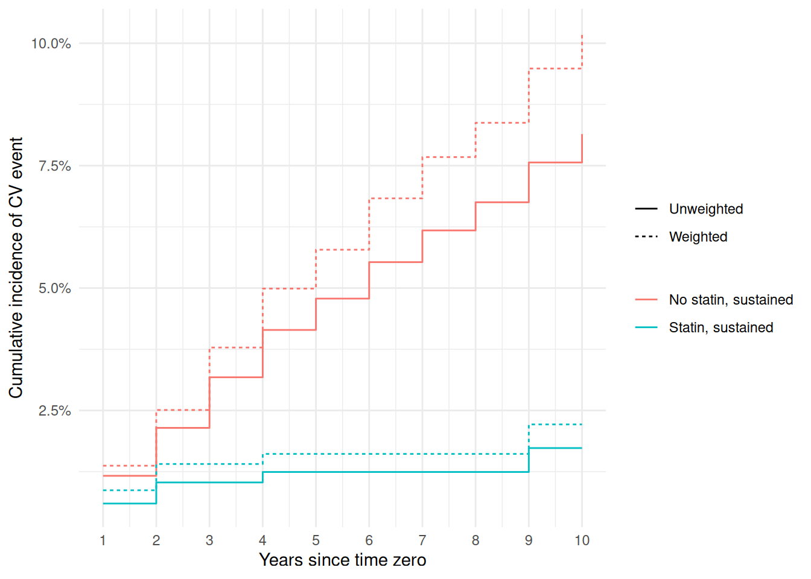

Chapter 12 Clone-censor-weight
Chapter 11 corrected a comparison for one thing that happens after time
zero — patients disappearing from view — and left another untouched.
Patients also stop taking the drug they started, and start the drug they
did not. Chapter 10’s Kaplan–Meier curves ignore that entirely: a patient
assigned to the statin arm by her statin value at time zero stays in
that arm for ten years whatever she swallows afterward. That is a
respectable estimand, and this chapter is about the other one — what
would happen if patients actually followed the strategy their arm
describes — and about the machinery that estimand requires.
12.1 From point treatments to treatment strategies
The contrast in Chapter 10 was between two point interventions: initiate a statin at time zero, or do not. Nothing was said about the years after, so the estimate answers a question about assignment. In a trial the analogue is the intention-to-treat effect, which is what a trial can deliver without further assumptions and what a patient rarely asks about. The question underneath is usually the per-protocol one: what happens if you initiate a statin and stay on it for the next decade, compared with never initiating one? Two strategies, each sustained over time, rather than two decisions taken once.
Sustained strategies bring their own price. The intention-to-treat contrast is identified by baseline exchangeability alone, because assignment is complete at time zero and nothing later can confound it. Once the strategy extends over time, adherence becomes part of the treatment, and the people who adhere are not the people who do not: they are healthier, or more careful, or better attended, in ways that also predict cardiovascular events. Deviating from protocol is a post-baseline variable with its own causes, and it needs its own adjustment.
The obvious move — keep the patients who followed protocol and analyze them as though they had been randomized — is the wrong one, and wrong in a way Chapter 5 already named. Deviation happens after time zero, so selecting on it selects on the future. A patient who has an event in year two never had the chance to stop her statin in year six, so she stays in the analysis; a patient who survived to year six and then stopped is deleted from it retrospectively, along with her early event-free time. The comparison is between people conditioned on their own subsequent histories, and the resulting numbers cannot be read as risks under either strategy.
12.2 The clone-censor-weight recipe
The fix keeps the per-protocol estimand and repairs the selection with weights. It has three steps. The strategy, and the formulation of the censoring rule in terms of when a person’s data cease to be compatible with the protocol she was assigned, come from Hernán and Robins’s target-trial work (Hernán and Robins 2016; Hernán and Robins 2017).
Clone. Every eligible person is copied into each strategy arm whose protocol her data are compatible with at baseline. A clone is not a duplicate observation to be counted twice by accident; it is the same person entered into two different bookkeeping systems, each asking a different question of her follow-up.
Censor. Each clone is followed until her observed data first contradict the strategy of the arm she sits in, at which point that clone is artificially censored — removed from that arm’s risk set, though she may continue in the other arm’s. Artificial censoring differs from the censoring of Chapter 11 only in provenance: it is imposed by the analysis rather than by the data, which means we know exactly what caused it and can model it.
Weight. Because we created the censoring, we are obliged to correct for it, with exactly Chapter 11’s inverse probability of censoring weight: each surviving clone at interval \(t\) is weighted by the reciprocal of her probability of having remained uncensored through \(t\), given time, arm, and covariates. Patients who stayed on protocol stand in for the similar patients who did not.
Here the first step is nearly vacuous, and it is worth being explicit
about why. Our two strategies are distinguished by what happens at time
zero — initiate, or do not — and statin records exactly that, with no
grace period in which either strategy is still possible. So each person’s
baseline data are compatible with one arm and one arm only, cloning
assigns each person to her observed arm, and the cohort we analyze has
the same number of rows as the cohort we started with. Censoring and
weighting do all the work.
Literal cloning earns its name when the protocol allows a window. Suppose the strategies were “initiate a statin within six months of the qualifying visit” and “do not initiate within six months”. A patient who starts at month four is compatible with both protocols at time zero and for the first four months: she is following the initiate-within-six-months strategy the whole time, and she is also following the do-not-initiate strategy right up until she starts. She is cloned into both arms, contributes person-time to both, and her non-initiator clone is artificially censored at month four while her initiator clone continues. The grace period removes the immortal-time problem that classifying her by a later event would create, at the cost of a patient who is genuinely two rows-worth of follow-up. Our cohort has no grace period, so we get the simple case; the recipe is identical either way.
12.3 Deviation in the statin cohort
The sta cohort supplies the deviation time directly. nonadherence is
the number of years until a patient departs from the strategy she began
with, and crucially it is defined in both arms, meaning different things
in each: statin initiators stopping, and untreated patients starting.
sta |>
group_by(statin) |>
summarise(n = n(), with_deviation = sum(!is.na(nonadherence)),
median_years = median(nonadherence, na.rm = TRUE),
.groups = "drop") |>
knitr::kable(digits = 2)| statin | n | with_deviation | median_years |
|---|---|---|---|
| 0 | 5327 | 1524 | 4.24 |
| 1 | 838 | 521 | 3.10 |
Follow-up in the per-protocol analysis now ends at the earliest of five
things: the cardiovascular event, death, loss to follow-up, the
administrative end at 10 years — all inherited from
event_time — and deviation. The last is the new one, and the only one
we will weight for.
library(survival)
source("R/ipcw.R")
source("R/ccw_estimator.R")
sta_ccw <- sta |>
filter(event_time > 0) |>
mutate(
dev_time = if_else(is.na(nonadherence), Inf, nonadherence),
fu_end = pmin(event_time, dev_time),
deviated = as.integer(dev_time <= event_time &
!(cv_event == 1 & event_time <= dev_time)),
event_c = as.integer(cv_event == 1 & event_time <= dev_time),
split_time = fu_end
)
pp <- make_person_period(sta_ccw, time = "split_time", event = "deviated",
cuts = 1:9) |>
mutate(event = as.integer(event_c == 1 & fu_end > tstart & fu_end <= tstop))Four points of bookkeeping, each of which changes the analysis if it goes
wrong. Patients who never deviate get dev_time = Inf, so pmin() leaves
their follow-up at event_time. The deviated indicator is 1 when
deviation came first, with the !(cv_event == 1 & ...) clause settling
ties in the outcome’s favour: a patient whose event and deviation are
recorded at the same instant had the event, and event_c — the outcome
indicator for this analysis — says so. split_time is a copy of fu_end
for the same reason Chapter 11 copied event_time: survSplit() consumes
the variable it splits on, and we need the original left standing to place
the outcome in its interval. And as in Chapter 11 the handful of patients
whose follow-up ends at time zero are dropped, since no interval can be
made out of nothing.
tibble(
quantity = c("patients", "person-period rows", "outcome events",
"deviations", "rows flagged as both"),
person_period = c(n_distinct(pp$.row_id), nrow(pp), sum(pp$event),
sum(pp$deviated), sum(pp$event == 1 & pp$deviated == 1)),
patient_level = c(nrow(sta_ccw), NA, sum(sta_ccw$event_c),
sum(sta_ccw$deviated), 0)
) |> knitr::kable()| quantity | person_period | patient_level |
|---|---|---|
| patients | 6157 | 6157 |
| person-period rows | 38107 | NA |
| outcome events | 314 | 314 |
| deviations | 1447 | 1447 |
| rows flagged as both | 0 | 0 |
The two indicators agree with their patient-level counts and never co-occur in a row, which is TRUE. What the table also shows is the cost of the estimand. Artificial censoring at deviation ends follow-up early for 1,447 patients, cutting the person-period data from Chapter 11’s 44,485 rows to 38,107, and it discards 146 of the 460 cardiovascular events in the cohort because they happened after their patient had already left her protocol. The statin arm is hit hardest: 10 of its 29 events survive the censoring, against 304 of 431 among non-initiators. Per-protocol questions are answered with less information than intention-to-treat questions, always.
12.4 Estimating per-protocol risk curves
The estimator is Chapter 11’s weight construction pointed at the new censoring indicator, with the outcome model replaced by direct weighted hazards so that risk curves come back rather than coefficients.
ccw_estimator <- function(pp_data, censor_model, treat, id = ".row_id",
numerator_model = NULL, truncate_at = 0.99) {
dev_fit <- glm(censor_model, family = binomial(), data = pp_data)
pp_data <- pp_data |> mutate(p_stay = 1 - predict(dev_fit, type = "response"))
if (!is.null(numerator_model)) {
num_fit <- glm(numerator_model, family = binomial(), data = pp_data)
pp_data <- pp_data |> mutate(p_stay_num = 1 - predict(num_fit, type = "response"))
} else {
pp_data <- pp_data |> mutate(p_stay_num = 1)
}
pp_data <- pp_data |>
group_by(.data[[id]]) |>
arrange(tstop, .by_group = TRUE) |>
mutate(w = cumprod(p_stay_num) / cumprod(p_stay)) |>
ungroup() |>
mutate(w = pmin(w, quantile(w, truncate_at)))
# A patient's last row is a stub ending at her exact follow-up time, so raw
# `tstop` is continuous; hazards are pooled over the interval it falls in.
pp_data |>
mutate(interval = ceiling(tstop)) |>
group_by(.data[[treat]], interval) |>
summarise(hazard = weighted.mean(event, w), .groups = "drop_last") |>
arrange(interval, .by_group = TRUE) |>
mutate(surv = cumprod(1 - hazard), risk = 1 - surv) |>
ungroup() |>
rename(tstop = interval)
}p_stay is the probability of not deviating in an interval, and the
cumprod() line is again the running product that turns per-interval
probabilities into a weight at time \(t\). The last block is new: within an
arm and interval, weighted.mean(event, w) is the weighted discrete-time
hazard, and cumprod(1 - hazard) multiplies the hazards back into a
survival curve. This is a weighted Kaplan–Meier computed in
person-period form, and it needs no outcome model at all.
The deviation model does need thought, because deviation is not the same
event in the two arms. We let the arms differ in their time trend and in
two covariates by interacting statin with the spline and with age and
diabetes, rather than fitting two fully arm-specific models. The
interaction model is the more parsimonious of the two here and the fit
turns out to be well behaved, so we prefer it; had it been unstable, two
glm() calls stratified by arm would give the same weights with more
freedom and less pooling.
dev_form <- reformulate(c("splines::ns(tstop, 3) * statin", sta_covs,
paste0("statin:", c("age", "diabetes"))), "deviated")
num_form <- reformulate("splines::ns(tstop, 3) * statin", "deviated")
curves <- ccw_estimator(pp, censor_model = dev_form, treat = "statin",
numerator_model = num_form)
crude <- ccw_estimator(pp, censor_model = deviated ~ 1, treat = "statin",
numerator_model = deviated ~ 1)The second call is a device worth knowing: identical numerator and
denominator models give every row a weight of exactly 1, so crude
is the same analysis with the censoring left uncorrected — censor at
deviation and hope.
Well behaved, here, means glm() converges with no aliased coefficient,
the largest coefficient other than the intercept is
2.86, and the fitted probability of
deviating within an interval runs from
0.0006 to 0.84.
The intercept is the exception at 77, and it is a
matter of scale rather than instability: sta_covs carries year as an
uncentered calendar year, so the intercept is the log-odds extrapolated
back to year 0. Refitting with I(year - 2007) moves it to
-6.8 and changes no fitted probability
— the largest discrepancy is
2e-14 — so we leave sta_covs
as the rest of the book uses it.
bind_rows("Weighted" = curves, "Unweighted" = crude, .id = "analysis") |>
mutate(arm = if_else(statin == 1, "Statin, sustained", "No statin, sustained")) |>
ggplot(aes(tstop, risk, colour = arm, linetype = analysis)) +
geom_step() +
scale_y_continuous(labels = scales::percent) +
scale_x_continuous(breaks = 1:admin_end) +
labs(x = "Years since time zero", y = "Cumulative incidence of CV event",
colour = NULL, linetype = NULL) +
theme_minimal()
Unlike ipcw_estimator(), this function returns only the curves, so the
weights must be rebuilt to be inspected.
wts <- pp |>
mutate(p_stay = 1 - predict(glm(dev_form, family = binomial(), data = pp),
type = "response"),
p_stay_num = 1 - predict(glm(num_form, family = binomial(), data = pp),
type = "response")) |>
group_by(.row_id) |> arrange(tstop, .by_group = TRUE) |>
mutate(w = cumprod(p_stay_num) / cumprod(p_stay)) |> ungroup()
wts |>
group_by(interval = ceiling(tstop)) |>
summarise(rows = n(), mean = mean(w), sd = sd(w), max = max(w),
.groups = "drop") |>
knitr::kable(digits = 2)| interval | rows | mean | sd | max |
|---|---|---|---|---|
| 1 | 6157 | 1.01 | 0.16 | 5.80 |
| 2 | 5436 | 1.01 | 0.23 | 6.31 |
| 3 | 4841 | 1.01 | 0.29 | 9.11 |
| 4 | 4271 | 1.01 | 0.42 | 18.90 |
| 5 | 3823 | 1.01 | 0.77 | 42.73 |
| 6 | 3389 | 1.03 | 1.79 | 101.85 |
| 7 | 3043 | 1.08 | 4.34 | 238.80 |
| 8 | 2681 | 0.99 | 0.58 | 17.96 |
| 9 | 2381 | 0.99 | 0.75 | 25.20 |
| 10 | 2085 | 0.98 | 0.63 | 20.52 |
These weights behave nothing like Chapter 11’s. They still average near
1.01, as stabilized weights should, but their
standard deviation is 1.41 and the largest is
239, with the spread widening as the running
product accumulates and peaking in the seventh interval. Kish’s effective sample size is
13,030 of
38,107 rows. These are the untruncated
weights, since the rebuilt version above stops short of the estimator’s
final pmin(); inside ccw_estimator() the 99th percentile,
2.32, becomes the ceiling. The reason is the contrast we
drew in Chapter 11: covariates that barely predicted loss to follow-up
predict adherence quite well, so the estimated probabilities of staying on
protocol vary across patients, and ten intervals of variation compound.
Extreme weights are the positivity assumption complaining, as in Chapter 9. A weight of 239 says that somewhere in covariate-and-time space staying on protocol was close to impossible — 52 of the 38,107 rows carry a fitted deviation probability above one half — so the few patients there who did stay must speak for everyone who did not. Positivity is a heavier demand for a sustained strategy than for a point treatment, because it has to hold in every interval. Truncation at the 99th percentile, a formality last chapter, is doing visible work here, and would be the first thing to vary in a sensitivity analysis.
A single number for the contrast needs an interval, and the weights make the model-based one untrustworthy: the curve is a function of two fitted models and a running product, so we resample patients instead. Each of 100 replicates draws 6,157 patient identifiers with replacement, reassembles their person-period rows under fresh identifiers, and reruns the whole pipeline — fewer than Chapter 7’s 200, because each replicate here refits two models and a running product.
set.seed(20260822)
ids <- unique(pp$.row_id)
rd_at <- function(cv, years = 5) {
r <- cv$risk[cv$tstop == years]
r[2] - r[1]
}
rd_boot <- replicate(100, {
draw <- tibble(.row_id = sample(ids, length(ids), replace = TRUE)) |>
mutate(.boot = row_number())
bs <- draw |>
left_join(pp, by = ".row_id", relationship = "many-to-many") |>
mutate(.row_id = .boot)
rd_at(ccw_estimator(bs, censor_model = dev_form, treat = "statin",
numerator_model = num_form))
})
tibble(risk_difference = rd_at(curves),
conf.low = quantile(rd_boot, 0.025),
conf.high = quantile(rd_boot, 0.975)) |>
knitr::kable(digits = 4)| risk_difference | conf.low | conf.high |
|---|---|---|
| -0.0417 | -0.0519 | -0.0292 |
Reassigning identifiers with .boot is the detail that makes this
correct: a patient drawn twice must appear as two different people, or the
group_by(.data[[id]]) inside the estimator would splice her duplicated
rows into one impossible history.
12.5 Interpreting the per-protocol effect
# Chapter 14 quotes the two clone-censor-weight five-year risks from this table
# (1.61% under sustained statin use, 5.78% under none) as literals; if anything
# here changes those numbers, update that chapter's `ch14-evalue-values` chunk.
km5 <- 1 - summary(survfit(Surv(event_time, cv_event) ~ statin, data = sta),
times = 5)$surv
drop5 <- 1 - summary(survfit(Surv(event_time, cv_event) ~ statin,
data = filter(sta_ccw, deviated == 0)),
times = 5)$surv
at5 <- function(cv, a) cv$risk[cv$statin == a & cv$tstop == 5]
tibble(
analysis = c("ITT-analog (Chapter 10)", "Naive per-protocol (drop deviators)",
"Censor at deviation, unweighted", "Clone-censor-weight"),
no_statin = c(km5[1], drop5[1], at5(crude, 0), at5(curves, 0)),
statin = c(km5[2], drop5[2], at5(crude, 1), at5(curves, 1))
) |>
mutate(difference = statin - no_statin) |>
knitr::kable(digits = 4)| analysis | no_statin | statin | difference |
|---|---|---|---|
| ITT-analog (Chapter 10) | 0.0566 | 0.0290 | -0.0276 |
| Naive per-protocol (drop deviators) | 0.0587 | 0.0240 | -0.0347 |
| Censor at deviation, unweighted | 0.0478 | 0.0124 | -0.0354 |
| Clone-censor-weight | 0.0578 | 0.0161 | -0.0417 |
Read down the difference column. The intention-to-treat analogue puts the five-year risk difference at -2.8 percentage points; the clone-censor-weight estimate is -4.2, with a bootstrap interval of -5.2 to -2.9. The per-protocol contrast is larger, which is the expected direction — a strategy followed for five years should do more than a strategy assigned and then abandoned — and in these simulated outcomes the gap is substantial. It rests on thin evidence: the sustained-statin curve is built from 10 events, which is why it sits flat for whole intervals and should not be read closely. The naive analysis that simply deletes deviators lands between the two, close enough to be mistaken for a reasonable answer and arrived at by conditioning on the future.
The weights also matter within the per-protocol column: uncorrected, censoring at deviation understates risk in both arms, because the patients who stay on protocol are the ones who stay well, and weighting them back up to represent the deviators they resemble raises both curves. That the correction moves the arms in the same direction is a reminder that artificial censoring is not a bias with a sign we can guess.
What did the extra estimand cost in assumptions? Chapter 10’s contrast
needed baseline exchangeability. This one needs that and no unmeasured
common causes of deviation and outcome, at every interval: whatever makes
a patient stop her statin in year four must be captured, at that time, by
the variables in dev_form. Ours contains baseline covariates and time
and nothing else, which is a strong claim about a cohort in which the
obvious reasons for stopping a statin — a new symptom, a rising liver
enzyme, a change in perceived prognosis — are time-varying and
unrecorded. If they matter, the weights are built from the wrong model
and this analysis looks exactly as it does now, which is Chapter 11’s
uncomfortable symmetry once more. It needs positivity at every interval
besides: in each stratum the model uses, some patients like her must
actually have stayed on protocol. Unlike exchangeability, that assumption
leaves a trace — in the weights we just looked at.
Two further limits belong on the record. The comparison here is still crude with respect to baseline confounding: the arms differ at time zero and nothing in this chapter fixes that. The complete recipe, promised at the end of Chapter 11, multiplies three weights per row — Chapter 9’s stabilized treatment weight, Chapter 11’s loss-to-follow-up weight, and this chapter’s deviation weight — and the product goes into exactly the calculation above. We carry one factor at a time so the mechanism stays visible. And “stay on it” is the crudest possible version of a sustained strategy; real protocols specify doses, gaps, and restarts, and each refinement changes both the estimand and the deviation model.
12.6 Exercises
- Refit the deviation model with only
age,sex, and a spline intstop, dropping the comorbidities and the arm interactions. Compare the weight distribution and the five-year risk difference against the full model. Which moves more, and what does that tell you about where the adherence signal lives? - Report the risk difference at three years instead of five, with a bootstrap interval. Compare its width with the five-year interval and account for the difference in terms of the events and the weights that each horizon uses.
- Suppose the protocol allowed a six-month grace period for initiation.
Describe what would change in
sta_ccw: who would be cloned into both arms, when each clone’s artificial censoring would occur, and why the.row_idcolumn would no longer identify a patient. Would you expect the per-protocol estimate to move toward the intention-to-treat one, or away from it?